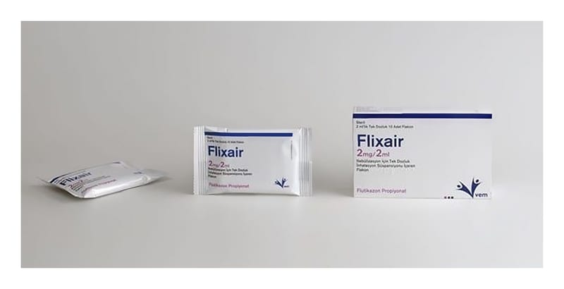

Flixair 2 mg/2 ml Nebülizasyon İçin Tek Dozluk İnhalasyon Süspansiyonu İçeren FLAKON,10 Adet

Ne için kullanılır
KT · Bölüm 1FLİXAİR, flutikazon propiyonat içerir. Flutikazon propiyonat kortikosteroidler adı verilen ilaç grubunun bir üyesidir ve yangı (iltihap, enflamasyon) giderici etkisi olduğundan, akciğerdeki hava yollarının duvarlarında oluşan şişme ve hassasiyeti azaltarak nefes alıp verme sorunlarını rahatlatır.
FLİXAİR düzenli tedavi gereken hastalarda astım ataklarının önlenmesine yardımcı olur. Bu nedenle “önleyici” olarak da adlandırılır. Düzenli olarak her gün kullanılması gerekir.
FLİXAİR nefes darlığı hissettiğiniz ani astım ataklarının tedavisinde kullanılmaz.
FLİXAİR, her uygulamada 0.5 mg flutikazon propiyonat sağlayan, plastik ampüllerde (nebül) sunulmaktadır. Süspansiyon beyaz ya da beyazımsı bir görünüşe sahiptir. Her 5 nebül bir folyo paket içinde bulunur ve her karton kutu 2 ayrı folyo poşet içinde toplam 10 nebül içerir.